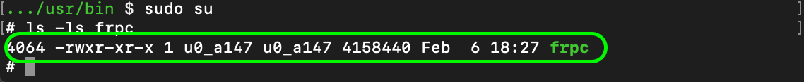

Termux配置NatFrp实现远程访问服务
title: Termux配置NatFrp实现远程访问服务
date: 2021-02-06 19:19:55
categories: 计算机
tags:
-
Android
-
Termux
-
Frp
1.进入Bin文件夹
（因为Termux特殊的目录结构，所以bin目录与正常的Linux系统并不一样）
cd /data/data/com.termux/files/usr/bin
2.Curl所需安装的frpc程序
sudo curl -Lo frpc https://getfrp.sh/d/frpc_linux_arm64 #64位系统
以上示例为64位系统的程序，如果是其他系统的话需要修改链接:软件下载
3.安装Frp
chmod 755 frpc
ls -ls frpc

出现类似内容时表明安装成功，可以使用下面代码验证，当输出版本号时表明安装成功
frpc -v
当需要使用NatFrp时只需要在任意目录执行下方命令即可
frpc [启动参数]
启动参数在 隧道列表-->隧道-->配置文件 查看
🔗参考：